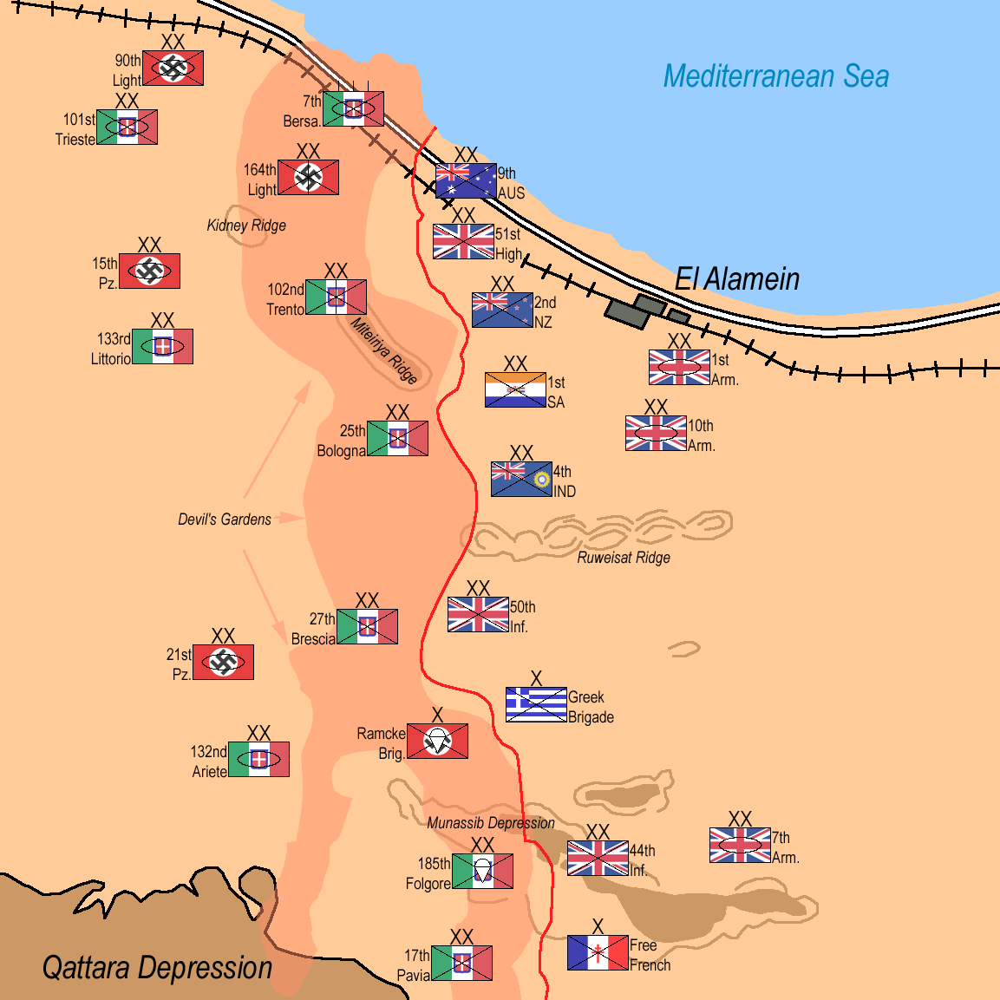

Segunda Batalla de El Alamein
La gran victoria del Octavo Ejército de Montgomery sobre Rommel, que marcó el punto de inflexión de la guerra en el Norte de África y el fin del avance del Eje hacia Egipto.
Datos
| Fechas | 23 de octubre – 11 de noviembre de 1942 |
|---|---|
| Lugar | El Alamein, norte de Egipto |
| Resultado | Victoria aliada decisiva; comienzo de la retirada definitiva del Eje en África |
| Bando aliado | Reino Unido y la Commonwealth (Octavo Ejército) |
| Bando del Eje | Alemania e Italia (Ejército Panzer de África) |
| Comandantes | Bernard Montgomery (Reino Unido); Erwin Rommel, Georg Stumme (Eje) |
| Clave | La superioridad aliada en hombres, tanques, artillería y suministros |
Bando aliado
y Commonwealth
Australia, N. Zelanda, India, Sudáfrica
Bando del Eje
Afrika Korps
Introducción
Tras su victoria en Gazala, Rommel había avanzado hasta El Alamein, a solo un centenar de kilómetros de Alejandría y del Canal de Suez. Allí, un frente estrecho embotellado entre el mar y la infranqueable depresión de Qattara frenó su avance. Reforzado con material estadounidense, el nuevo comandante del Octavo Ejército, Bernard Montgomery, preparó meticulosamente la ofensiva que expulsaría al Eje de Egipto.
Razones
- Salvar Egipto y Suez: impedir que el Eje se apoderara del Canal de Suez y de los pozos de petróleo de Oriente Medio.
- Aprovechar la superioridad material: los Aliados acumulaban una ventaja abrumadora en tanques (incluidos los estadounidenses Sherman), artillería, aviones y suministros.
- Necesidad política de una victoria: Churchill exigía un triunfo terrestre claro que levantara la moral aliada.
Cuerpo (desarrollo)
La batalla comenzó la noche del 23 de octubre con uno de los mayores bombardeos de artillería de la guerra. Como el frente no tenía flancos que rodear, Montgomery planteó una batalla de desgaste frontal: sus tropas debían abrir pasillos ("operación Lightfoot") a través de los enormes campos de minas alemanes, apodados "el jardín del diablo".
Siguieron días de durísimos combates. Rommel, que estaba enfermo en Alemania, regresó a toda prisa, pero su ejército tenía poco combustible y estaba en clara inferioridad. La ofensiva final, la operación Supercharge, quebró el frente del Eje a comienzos de noviembre. Contra las órdenes de Hitler de resistir hasta el final, Rommel inició una larga retirada para salvar lo que quedaba de su ejército.

Mapa de la Segunda Batalla de El Alamein (Wikimedia Commons): el frente encajonado entre el mar y la depresión de Qattara. Leyenda original en inglés.
Conclusión
El Alamein fue el gran punto de inflexión de la guerra en el Norte de África: a partir de aquí, el Eje solo retrocedería. Combinada con el desembarco de la Operación Torch en el noroeste de África pocos días después, la victoria dejó a Rommel atrapado entre dos fuegos.
- Marcó el fin de la amenaza del Eje sobre Egipto y el Canal de Suez.
- Fue la primera gran victoria terrestre británica de la guerra, un enorme impulso moral.
- Consagró la fama de Montgomery como comandante.
"Antes de El Alamein nunca tuvimos una victoria. Después de El Alamein nunca tuvimos una derrota." — Winston Churchill.
Curiosidades
- "El jardín del diablo": así llamaban los alemanes a sus inmensos campos de minas, con cientos de miles de artefactos.
- Las campanas de Inglaterra: Churchill ordenó tocar las campanas de las iglesias, silenciadas desde 1940, para celebrar la victoria.
- Rommel ausente al inicio: como en Normandía dos años después, el "Zorro del Desierto" no estaba presente cuando comenzó la batalla decisiva; su sustituto murió de un infarto durante los combates.
Teorías
Debates e interpretaciones historiográficas, presentados como tales:
- ¿Victoria de material más que de talento? Se debate cuánto pesó la abrumadora superioridad aliada en suministros frente al mérito táctico de Montgomery, criticado por algunos por su cautela.
- La persecución: se discute si Montgomery pudo haber destruido por completo al ejército de Rommel en la persecución posterior, en lugar de dejarlo escapar hacia Túnez.